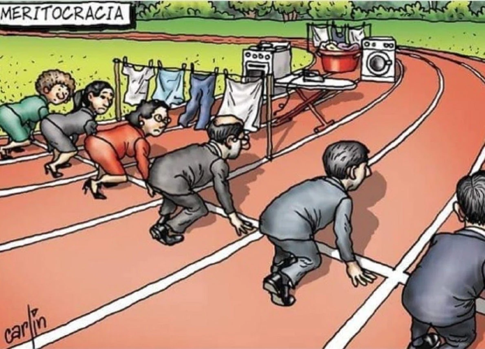
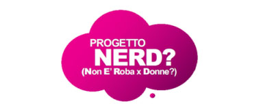
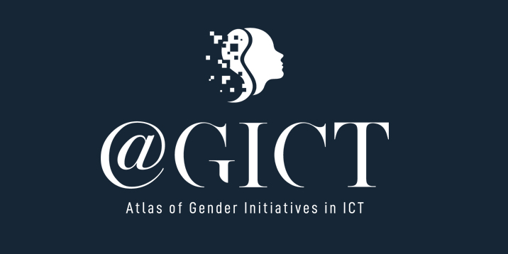

Un percorso ancora in salita
Con gli anni le donne occidentali hanno acquisito sempre più diritti:
- Possibilità di prendere parte alla vita politica,
- Accesso all’istruzione,
- Possibilità di accedere agli stessi lavori degli uomini,
- Leggi a tutela delle discriminazioni,
- Possibilità di decidere del proprio corpo,
- E molto altro.
Allora perché ancora oggi si continua a parlare di pari opportunità e di parità di genere?
La risposta sta nei numeri e, prima ancora, nella nostra società.
Donne e Università: i numeri
Cominciamo dai numeri: quante donne sono ai vertici del potere? Quante donne con il loro lavoro possono cambiare le sorti di un’azienda o più in generale di una comunità? Che la risposta sia “poche” lo si intuisce dai titoloni in prima pagina appena viene eletta una donna a capo di qualcosa, a sottolineare la straordinarietà dell’evento.
In ambiente universitario si cerca di garantire questa parità tramite un “Bilancio di genere”. Questo documento ha due scopi:
-
Riportare la situazione attuale, indicando la percentuale di donne presenti in funzione del ruolo ricoperto:
- studente, dottorando o specializzando
- assegnista di ricerca o personale docente
- personale tecnico amministrativo e collaboratori esperti
- dirigente, con incarico istituzionale e di governo
Indicare le azioni intraprese dall’ateneo e monitorarne gli effetti
Se andate a guardare la percentuale di ragazze o insegnanti donne nell’ area ICT, vedrete che spesso le percentuali non arrivano neanche al 15%. Qui di seguito ti suggeriamo alcune iniziative per aumentare il numero di iscritte ai corsi di informatica e ingegneria informatica:
-

Progetto NERD? (Non È Roba per Donne?)
Promosso da IBM e rivolto a ragazze tra i 15 e i 18 anni. Se rientrate in questa categoria il consiglio è quello di provare!
Apri Progetto NERD? in un'altra pagina -

GICT - Atlas of gender initiatives in ICT
Sito ricco di eventi e progetti legati a questo tema.
Apri GICT in un'altra scheda
La donna nella società
Questi numeri riflettono una cultura ancora fortemente e tristemente fondata su vecchi stereotipi. Quali sono i ruoli che generalmente associamo alle donne?
Una possibile risposta potrebbe essere legata al prendersi cura.
Pensate ai vostri nonni, se hanno bisogno di assistenza per mangiare, pulire, per la cura della persona, chi chiamereste: un uomo o una donna? Perché?
Quando eravate piccoli avevate, o avreste voluto, un baby sitter o una baby sitter? Perché?
Allo stesso modo, in casa chi si occupa delle faccende domestiche? Chi cucina, riordina, pulisce, lava i panni, stira?
Nel 2016 l’Eurostat sosteneva che:
In Italia l’ 81% delle donne dichiarava di svolgere quotidianamente attività domestiche, contro il 20% dichiarato dagli uomini.
Pensate ora al tempo libero: quanto tempo libero da dedicare a sé stessi può rimanere ad una persona quando ha finito di lavorare, prendersi cura dei propri familiari e fatto le faccende domestiche quotidiane?
Per quale motivo la responsabilità di tutto il carico domestico deve ricadere su un’unica persona quando si è almeno in due?
Alla base c’è un errore di fondo: per secoli siamo stati portati a credere che fosse giusto così, che il nostro compito come donne fosse accudire i nostri cari in tutti i modi e le forme possibili, dalla cura della casa alla cura della persona.
Questo oggi non può più essere considerato essere donna. Siamo persone uniche come tutte le altre, né più né meno. La realizzazione personale di ognuno di noi (uomo, donna, non binario, ecc.) può avvenire in vari modi e ognuno deve avere il diritto e la possibilità di raggiungere i propri obiettivi personali di vita.
La lotta per le pari opportunità e la parità di genere non potrà mai essere vinta se continuiamo ad alimentare vecchi stereotipi e per questo servono interventi su più fronti:
-
Lavorare continuamente e incessantemente sugli stereotipi di genere:
- non esistono lavori da maschio e lavori da femmina. Il lavoro per essere svolto richiede competenze e queste non sono prerogativa di un genere, possono essere acquisite tanto dall’uomo che dalla donna,
- la matematica e la tecnologia non sono esclusiva del genere maschile, così come l’empatia e il prendersi cura degli altri non sono esclusiva del genere femminile.
-
Lavorare sul linguaggio: ci sono tantissimi studi su come il linguaggio influenzi il nostro modo di pensare, le nostre scelte e le nostre azioni. Per questo molte università hanno posto l’attenzione sul proprio linguaggio adottando forme di comunicazione attente alla questione di genere.